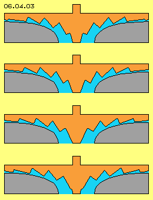

Sog- und Druck-Seiten
Eingezeichnet sind sechs Blätter B, zwischen denen jeweils Kanäle (hellblau) spiralig von innen nach außen verlaufen. Aus dem mittigen Bereich wird damit Fluid nach außen gefördert auf einer Bahn, deren prinzipieller Verlauf durch die blaue Kurve E skizziert ist.
Eingezeichnet ist ein Fluidpartikel D (dunkelrot) an der Vorderseite eines Schaufelblatts. Dortiges Fluid wird per Druck im Drehsinn vorwärts und auswärts geführt, wobei diese Auswärtsbewegung auch der Richtung der Trägheit entspricht. Damit kommt per Druck plus Fliehkraft diese vorwärts-auswärts gerichtete Strömung E zustande.
Eingezeichnet ist auch ein Partikel C (gelb), der sich nah an der Hinterseite eines Schaufelblatts befindet. Mittelbar wird auch dieser Partikel durch Druck von der nachfolgenden Vorderseite vorwärts-auswärts gedrückt. Andererseits stellt die fortwährend nach vorn wandernde Fläche einen Sog dar, in welchen hinein Partikel widerstandslos fallen. Die generierte Strömung wird also nur teilweise per mechanischem Druck erzeugt, teilweise jedoch fallen Partikel ´aus eigener Kraft´ in die gewünschte Richtung.
Nur-Sog-Seiten
In diesem Bild bei B ist die Oberfläche des Rotors kegelförmig ausgeführt, wiederum stufenförmig mit diesen Spiral-Bändern als Sogseiten. Nahe dieser zurück-weichenden Wände sind jeweils Partikel (gelb) eingezeichnet, welche per Sog nach oben-auswärts geführt werden. Bei dieser Anordnung wird auf das Fluid kein mechanischer Druck ausgeübt, weil die Auswärtsbewegung praktisch nurmehr aufgrund Fliehkraft zustande kommt (besonders bei flüssigem Medium). Die ´Zähne´ dieser Schaufeln weisen nur noch eine Sog-Seite, aber keine Druck-Seite mehr auf.
In diesem Bild unten ist die Gehäusewand (grau) als runde, gekrümmte Fläche ausgeführt. Der Rotor ist im Prinzip wieder eine plane Scheibe, wobei hier allerdings die Zähne von innen nach außen unterschiedlich angestellt sind. Das Fluid, repräsentiert durch einige gelbe Partikel, wird entlang der jeweiligen Sogseiten von innen nach außen gezogen. Die ´Druckseiten´ kippen von innen nach außen etwas abwärts, werden also zunehmend flacher. Es wird damit aber kein mechanischer Druck ausgeübt, vielmehr wird nur die Querschnittsfläche zwischen den Zähnen konstant gehalten (entsprechend zum erweiterten Radius bzw. verringert entsprechend der zunehmenden Strömungsgeschwindigkeit).
Strömung nur per Sog

Die Sogseiten dieses Rotors entsprechen noch immer den spiraligen Bändern (analog obigem Bild 06.04.01), welche jeweils versetzt angeordnet sind. Diese Bänder können lang gewundene Spiralen darstellen oder mehr radial von innen nach außen verlaufen. Der Querschnitt zeigt immer diese zahnförmige Abstufung, wobei die Strömung jedoch diagonal dazu verläuft, in dieser Richtung die Zähne also gestreckter erscheinen.
In diesem Bild sind vier Positionen des Rotors während einer Drehung dargestellt. Jede Sogseite wandert dabei von innen nach außen. Die nachfolgende Animation zeigt diese vier Bilder und erst damit wird deutlich, wie ausschließlich per Sog das Fluid von innen nach außen gefördert wird.
Deutlich ist nun auch zu erkennen, wie die Zähne aus der Achse heraus wachsen und das Fluid dort zunächst in drehende Bewegung versetzen. Die Sogseiten werden dann größer und kippen nach außen, so dass mehr Fluid nun dieser Wand folgen wird. Nach außen hin weist die Sogwand wieder geringere Höhe auf (wird dafür an langem Radius entsprechend länger) und sie verläuft nach außen vollständig.
Am Auslass wird eine flächige Strömung rundum anliegen, erzeugt ausschließlich aufgrund Sog und unterstützt durch Fliehkraft, eine optimale Technik für viele Anwendungen. Die flächige Strömung kann z.B. auch tangential in ein umflaufendes Rohr (eine ´Schnecke´) münden. Im Rohr entsteht damit eine starke Drallströmung.
Freie Energie
Die Selbst-Beschleunigung kommt ausschließlich zustande, indem aus der ganz normalen chaotischen Molekularbewegung immer nur diejenigen Partikel eine relativ lange Strecke ungehindert zurück legen können, welche momentan in Richtung der zurückweichenden Wand zufällig gestoßen wurden. Die Strömung entsteht hier also ausschließlich dadurch, dass Partikeln einer bevorzugten Richtung (hin zur Sogseite) jeweils eine längere Distanz bis zur nächsten Kollision zur Verfügung steht.
Die Fliehkraft unterstützt diese Bewegungsrichtung. Fliehkraft an sich ist ´kostenlos´, jedoch erfordert sie zuvor entsprechende Beschleunigung, normalerweise also mechanische Arbeit. Hier jedoch fliegen die Partikel ´aus eigener Kraft´ in die durch den Sog vorgegebene Richtung. Erst am Auslass steht dann die Fliehkraft bzw. Trägheit als kinetische Energie zur Verfügung, nahezu ´kostenlos´.
In Bild 06.04.05 ist vorige Maschine nochmals im Quer- und Längsschnitt dargestellt. Der Rotor A (rot) weist eine runde Kontur auf, das Fluid fließt vom Einlass B bogenförmig zum Auslass D, im Raum auf diagonal gekrümmter Kurve F. Die Zähne C bzw. die Sogseiten verlaufen hier spiralig und auf relativ kurzem Weg nach außen.
Unten links im Längsschnitt ist der Auslass D am seitlichen Rand der Maschine angelegt. Rechts im Längsschnitt ist eine Alternative aufgezeigt, bei welcher der Kanal halbkreisförmig verläuft, die Schaufeln C in einer ´Schüssel´ angelegt sind, so dass der Auslass E wieder zurück weist in axiale Richtung. Diese Variante ist besonders vorteilhaft, wenn diese zahnförmigen Schaufeln in einer Turbine eingesetzt werden.
Turbine
In Bild 06.04.09 ist ein Modell des Rotors (ohne Gehäuse) einer Turbine dargestellt. Die zahnförmigen Schaufeln sind hier ´hufeisen-förmig´ in die umlaufende Vertiefung eingefügt. Der Zufluss erfolgt dabei rundum diagonal von außen, der Abfluss erfolgt mittig in axiale Richtung. Der Zufluss ist schneller als die Drehgeschwindigkeit des Rotors. Das Fluid fliegt über die flachen Seiten der Zähne hinweg, bis es auf eine Druck-Wand trifft. An dieser entlang erfolgt die Umlenkung (letztlich auch in axiale Richtung, zum Auslass). Alles Fluid trifft früher oder später auf eine solche Wand, d.h. die komplette Strömung wird in Drehmoment umgesetzt. Letztlich wird das Fluid in axialer Richtung aus der Turbine abgeführt.
Im Vergleich zur komplexen Geometrie gängiger Turbinen sind diese Schaufeln sehr kompakt und relativ einfach zu bauen. Am effektivsten arbeiten bislang die Freistrahl-Turbinen, weil auch dort alles Fluid ausschließlich an Druckseiten umgelenkt wird. Die obige Sog-Pumpe wie auch diese neue Druck-Turbine wird nicht für alle Anwendungen optimal sein (in nachfolgenden Kapiteln werden Beispiele dargestellt). Auf jeden Fall konnte damit aufgezeigt werden, wie Bewegungen eines Fluids zur Nutzung der molekularen Bewegungsenergie zweckdienlich zu organisieren sind.
 In diesem Kapitel wird beispielhaft die Gestaltung von Blättern bzw. Schaufeln von Pumpen beschrieben. Dabei soll anstelle der üblichen Anwendung von Druck die Wirkung des Soges genutzt werden. Zunächst ist in Bild 06.04.01 schematisch der Rotor A (rot) einer normale Zentrifugalpumpe dargestellt, oben im Querschnitt und unten im Längsschnitt durch die Systemachse. Es wird hier stets Drehung gegen den Uhrzeigersinn unterstellt.
In diesem Kapitel wird beispielhaft die Gestaltung von Blättern bzw. Schaufeln von Pumpen beschrieben. Dabei soll anstelle der üblichen Anwendung von Druck die Wirkung des Soges genutzt werden. Zunächst ist in Bild 06.04.01 schematisch der Rotor A (rot) einer normale Zentrifugalpumpe dargestellt, oben im Querschnitt und unten im Längsschnitt durch die Systemachse. Es wird hier stets Drehung gegen den Uhrzeigersinn unterstellt.
Die Schaufelblätter in vorigem Bild stellen praktisch spiralige Bänder dar, die auf einer Ebene angeordnet sind (hier z.B. an der planen Scheibe des Rotors befestigt sind). Oben in Bild 06.04.02 sind diese Spiral-Bänder in axialer Richtung so auseinander gezogen sind, dass die Unterkante des einen Bands durch eine waagrechte Fläche mit der Oberkante eines nachfolgenden Bandes zu verbinden ist. Im Rotor ist also mittig eine kegelförmige Vertiefung angelegt, wobei diese Innenfläche abgestuft ist. Der Innenraum des Rotor stellt praktisch die Negativ-Form des ´Turm-von-Babylon´ dar, d.h. eines runden Kegels mit spiralig verlaufenden ´Wegen´ vom unten nach oben bzw. von oben nach unten. Hier nun folgt ein Partikel (gelb) nahe der senkrechten Wand dieser nach außen-abwärts zurück weichenden Fläche per Sog. Ein Partikel (rot) nahe der waagrechten Fläche wird von oben nach unten gedrückt. Zwischen Rotor und Gehäuse (grau) ergibt sich wieder eine auswärts-vorwärts gerichtet Strömung, per Sogwirkung und unterstützt durch Fliehkraft.
Im Rotor ist also mittig eine kegelförmige Vertiefung angelegt, wobei diese Innenfläche abgestuft ist. Der Innenraum des Rotor stellt praktisch die Negativ-Form des ´Turm-von-Babylon´ dar, d.h. eines runden Kegels mit spiralig verlaufenden ´Wegen´ vom unten nach oben bzw. von oben nach unten. Hier nun folgt ein Partikel (gelb) nahe der senkrechten Wand dieser nach außen-abwärts zurück weichenden Fläche per Sog. Ein Partikel (rot) nahe der waagrechten Fläche wird von oben nach unten gedrückt. Zwischen Rotor und Gehäuse (grau) ergibt sich wieder eine auswärts-vorwärts gerichtet Strömung, per Sogwirkung und unterstützt durch Fliehkraft.
In Bild 06.04.03 ist die Gehäusewand (grau) wieder als runde und gekrümmte Oberfläche angelegt, aber auch die Rotor-Oberfläche weist nun eine hyperbelförmige Krümmung auf, wiederum zahnförmig abgestuft.
 Bei dieser Sog-Schaufel wird also nur der Effekt einer zurückweichenden Wand zur Generierung einer Strömung genutzt. Der Energie-Aufwand zum Antrieb des Rotors ist minimal, weil der Rotor keinerlei Druck auf das Fluid ausübt, noch nicht einmal Haftreibung von Fluid muss durch den Rotor überwunden werden. Diese Sog-Schaufel-Zähne produzieren also Strömung mit minimalem Aufwand.
Bei dieser Sog-Schaufel wird also nur der Effekt einer zurückweichenden Wand zur Generierung einer Strömung genutzt. Der Energie-Aufwand zum Antrieb des Rotors ist minimal, weil der Rotor keinerlei Druck auf das Fluid ausübt, noch nicht einmal Haftreibung von Fluid muss durch den Rotor überwunden werden. Diese Sog-Schaufel-Zähne produzieren also Strömung mit minimalem Aufwand. Diese Partikel werden von der Wand verzögert reflektiert, fliegen also mit geringerer Geschwindigkeit zurück, so dass als Nebeneffekt wiederum Kälte auftritt. Letztlich weist die Strömung am Auslass natürlich auch geringeren statischen Druck auf. Insofern ergibt sich von innen nach außen auch eine Potentialdifferenz. Der höhere statische Druck am Einlass schiebt somit das Fluid von innen nach außen. Zudem dreht außen das Fluid schneller im Raum als innen, stellt insofern auch einen ausdrehenden Potentialwirbel dar. Dieser ist hier aber nicht Ursache der Beschleunigung, sondern nur Nebeneffekt.
Diese Partikel werden von der Wand verzögert reflektiert, fliegen also mit geringerer Geschwindigkeit zurück, so dass als Nebeneffekt wiederum Kälte auftritt. Letztlich weist die Strömung am Auslass natürlich auch geringeren statischen Druck auf. Insofern ergibt sich von innen nach außen auch eine Potentialdifferenz. Der höhere statische Druck am Einlass schiebt somit das Fluid von innen nach außen. Zudem dreht außen das Fluid schneller im Raum als innen, stellt insofern auch einen ausdrehenden Potentialwirbel dar. Dieser ist hier aber nicht Ursache der Beschleunigung, sondern nur Nebeneffekt.
Bei obiger Pumpe sollte also möglichst wenig Druck ausgeübt werden, weil dieser hohen Energie-Einsatz erfordert. Ein Sog ist mit viel geringerem Einsatz zu organisieren, um eine Strömung zu generieren. Umgekehrt kann in einer Turbine die Strömung in mechanisches Drehmoment nur umgesetzt werden per Druck, durch die Umlenkung an den Turbinen-Schaufeln. Dabei sollten alle Teile des Mediums an den Druckflächen reflektiert werden. Das Medium sollte also keinen Richtungswechsel vollziehen, indem es in ´leere´ Bereiche fällt, d.h. ohne Umlenkung an einer Druckwand. Bei obiger Pumpe sind die Schaufeln so gestaltet, dass sie praktisch nur durch die Sogwand wirken. Im Umkehrschluss sollte bei einer Turbine das Medium nur an der Druckseite der Schaufeln wirken. Das ist möglich, wenn vorigen zahnförmige Strukturen spiegelbildlich bzw. gegenläufig eingesetzt werden.
Bei obiger Pumpe sind die Schaufeln so gestaltet, dass sie praktisch nur durch die Sogwand wirken. Im Umkehrschluss sollte bei einer Turbine das Medium nur an der Druckseite der Schaufeln wirken. Das ist möglich, wenn vorigen zahnförmige Strukturen spiegelbildlich bzw. gegenläufig eingesetzt werden.
06.07. Beschleunigung in Düsen
Fluid-Technologie - Grundlagen